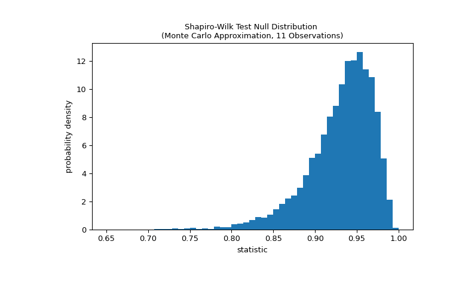

The algorithm used is described in [4] but censoring parameters as
described are not implemented. For N > 5000 the W test statistic is
accurate, but the p-value may not be.
Shapiro, S. S. & Wilk, M.B, “An analysis of variance test for
normality (complete samples)”, Biometrika, 1965, Vol. 52,
pp. 591-611, DOI:10.2307/2333709
[3]
Razali, N. M. & Wah, Y. B., “Power comparisons of Shapiro-Wilk,
Kolmogorov-Smirnov, Lilliefors and Anderson-Darling tests”, Journal
of Statistical Modeling and Analytics, 2011, Vol. 2, pp. 21-33.
Phipson B., and Smyth, G. K., “Permutation P-values Should Never Be
Zero: Calculating Exact P-values When Permutations Are Randomly
Drawn”, Statistical Applications in Genetics and Molecular Biology,
2010, Vol.9, DOI:10.2202/1544-6115.1585
[6]
Panagiotakos, D. B., “The value of p-value in biomedical
research”, The Open Cardiovascular Medicine Journal, 2008, Vol.2,
pp. 97-99, DOI:10.2174/1874192400802010097
Examples
Suppose we wish to infer from measurements whether the weights of adult
human males in a medical study are not normally distributed [2].
The weights (lbs) are recorded in the array x below.
The normality test of [1] and [2] begins by computing a statistic based
on the relationship between the observations and the expected order
statistics of a normal distribution.
The value of this statistic tends to be high (close to 1) for samples drawn
from a normal distribution.
The test is performed by comparing the observed value of the statistic
against the null distribution: the distribution of statistic values formed
under the null hypothesis that the weights were drawn from a normal
distribution. For this normality test, the null distribution is not easy to
calculate exactly, so it is usually approximated by Monte Carlo methods,
that is, drawing many samples of the same size as x from a normal
distribution and computing the values of the statistic for each.
>>> defstatistic(x):... # Get only the `shapiro` statistic; ignore its p-value... returnstats.shapiro(x).statistic>>> ref=stats.monte_carlo_test(x,stats.norm.rvs,statistic,... alternative='less')>>> importmatplotlib.pyplotasplt>>> fig,ax=plt.subplots(figsize=(8,5))>>> bins=np.linspace(0.65,1,50)>>> defplot(ax):# we'll reuse this... ax.hist(ref.null_distribution,density=True,bins=bins)... ax.set_title("Shapiro-Wilk Test Null Distribution \n"... "(Monte Carlo Approximation, 11 Observations)")... ax.set_xlabel("statistic")... ax.set_ylabel("probability density")>>> plot(ax)>>> plt.show()

The comparison is quantified by the p-value: the proportion of values in
the null distribution less than or equal to the observed value of the
statistic.
If the p-value is “small” - that is, if there is a low probability of
sampling data from a normally distributed population that produces such an
extreme value of the statistic - this may be taken as evidence against
the null hypothesis in favor of the alternative: the weights were not
drawn from a normal distribution. Note that:
The inverse is not true; that is, the test is not used to provide
evidence for the null hypothesis.
The threshold for values that will be considered “small” is a choice that
should be made before the data is analyzed [5] with consideration of the
risks of both false positives (incorrectly rejecting the null hypothesis)
and false negatives (failure to reject a false null hypothesis).